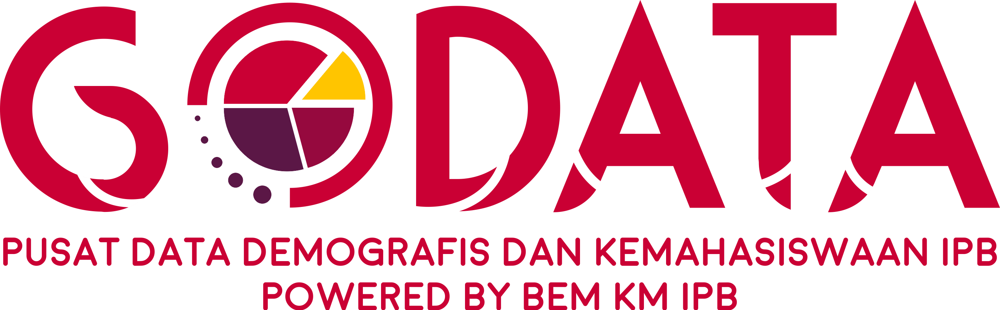

Toggle navigation
Survei
Terkini
Database
Infografis
GODATA
Kategori
Kontak

Hubungi kami
Seputar pertanyaan, kritik, dan saran silahkan menghubungi kami melalui kontak berikut:
Bagus Rahmansyah Priyoadi (081235445996)
@GO_DATA
Riset dan Pengembangan
GODATA TEAM
Dikelola Oleh Biro Riset & Pengembangan | Kabinet Bara Muda BEM KM IPB 2018